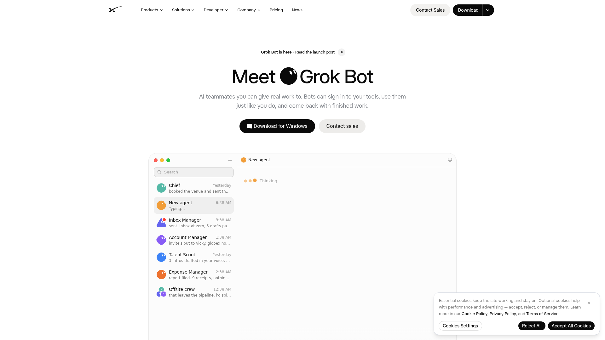
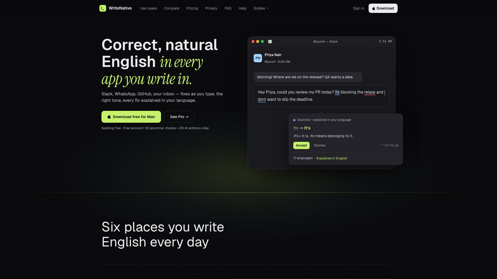
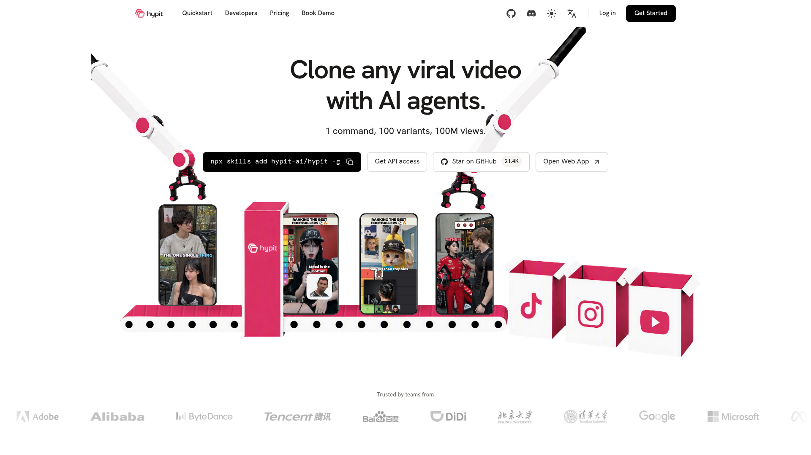
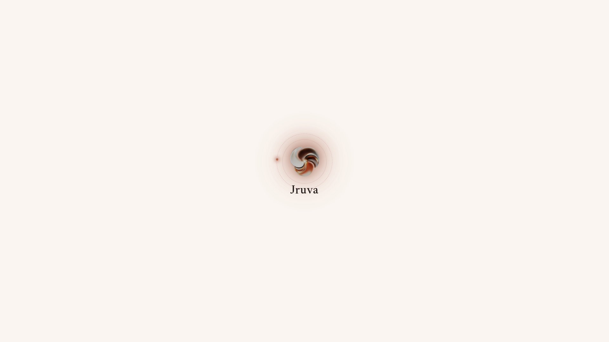
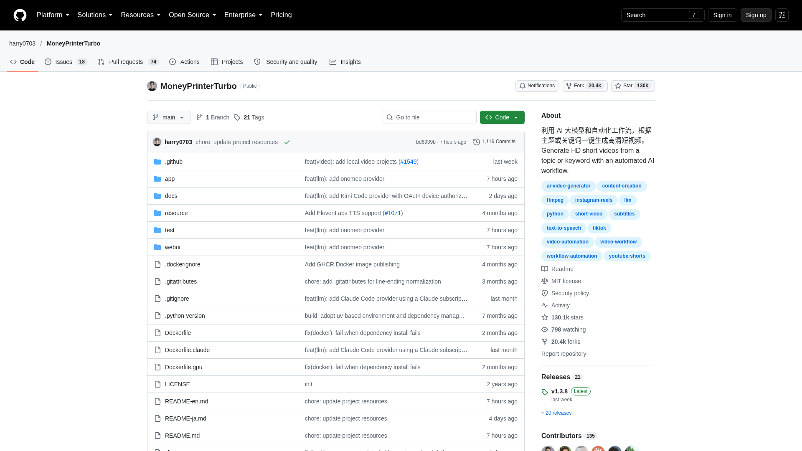

10月12日 周一

Grok Bot
xAI 推出的常驻 AI 队友：每个 Bot 拥有一台长期在线的云端电脑，可登录邮箱、CRM、网站等工具替你执行多步骤任务，跨会话积累记忆，可多个 Bot 分工协作。适合把资料收集、信息清洗、重要提醒这类重复杂务整包交出去，合上笔记本也在后台继续跑。包含在 Cursor Pro（$20/月）或 Su

WriteNative
面向非英语母语者的 Mac 写作助手：在 Slack、Gmail、GitHub 等任意应用里输入时即时纠错、改写语气，并用你的母语解释每一处修改原因。支持设备端模型完全离线运行，免费额度每天 50 次语法检查 + 20 次 AI 操作，Pro $8/月。

Hypit
用 AI Agent 克隆爆款短视频的开源制作框架：丢进一条参考视频，Agent 会拆解它的镜头、台词、B-roll、字幕与特效，替换成你的商品素材后按词对齐重新合成，一次可批量产出 100+ 个投放变体。兼容 Claude Code、Codex 等编码 Agent，自带密钥或托管 API 均可。

Jruva
把聊天、文档、搜索与图片整合到一处的 AI 工作空间，内置多供应商自动回退：某个模型不可用或额度用尽时自动切换到其他供应商，对话不中断。支持 Google 登录，界面简洁，定位为个人轻量 AI 工作台。

MoneyPrinterTurbo
开源的全自动短视频工厂：丢进一个主题或 Prompt，自动完成脚本撰写、配音、字幕、剪辑与合成，直接输出适配 TikTok、Reels、Shorts 尺寸的成片。完全免费开源、无订阅无水印，适合批量做号的创作者本地部署使用。